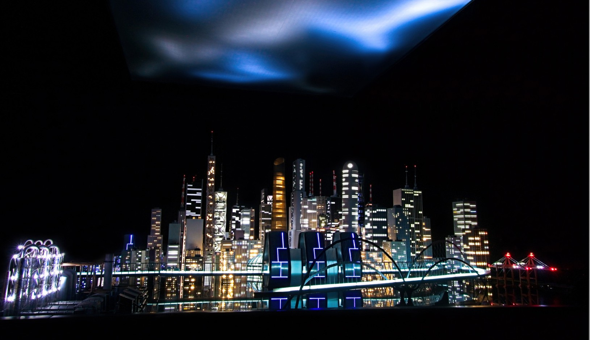

04 / 2022 / Interactive installation · Sculpture, light and sound
Biocenosis
A city as an interdependent system
Sigismond de Vajay & Kevin Lesquenner + LAPSo

An immersive city model stages the interdependence of human, urban and non-human life under environmental pressure.
A city of 430 buildings becomes the setting for an encounter with ecological fragility. Sculpture, lighting and interactive systems form a submerged urban landscape, in which visitors’ presence modulates the behaviour of the fictional city.
Developed by Sigismond de Vajay in collaboration with Kevin Lesquenner and LAPSo, the installation connects artistic world-building with systems inspired by biological processes. My participation formed part of LAPSo’s collective contribution to the work.